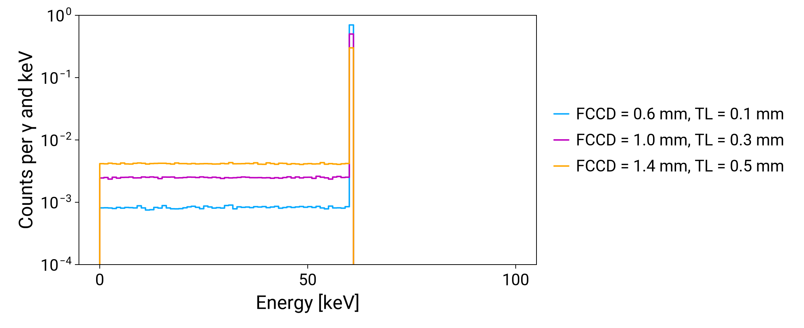
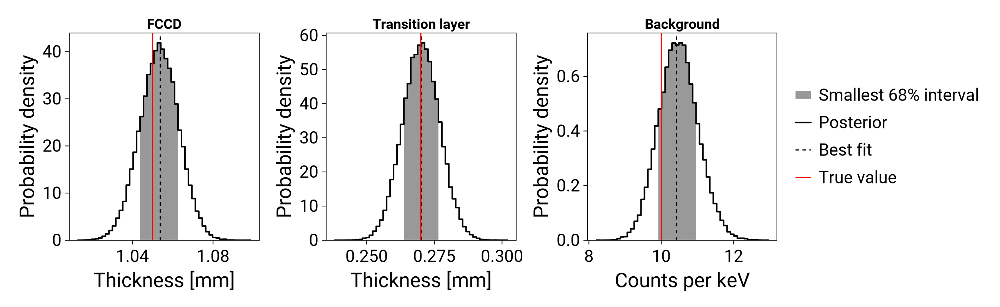
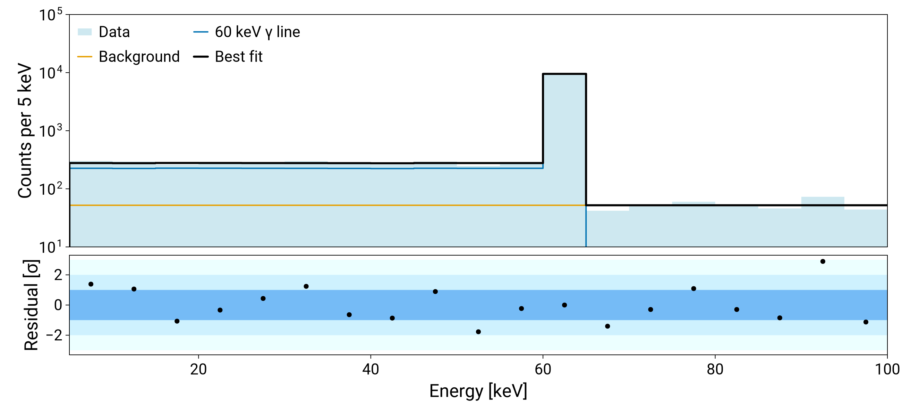

Tutorial: fitting the FCCD with template morphing
This tutorial fits the dead layer of a detector to the spectrum of a 60 keV γ line, with spectra simulated on a grid of dead layer models (see Accounting for systematic uncertainties). The data are made with known values, so the result can be compared with the truth at the end.
Model of the detector surface
As a toy model we assume a γ of 60 keV deposits its energy at a depth that is uniform from 0 to 2 mm below the surface of the detector. The fraction of the charge that is collected from a depth $d$ depends on two parameters, in mm:
- the FCCD (full charge collection depth): below it, all the charge is collected,
- the thickness
TLof the transition layer above the FCCD: through it, the collected fraction rises linearly from 0 at a depth of FCCD − TL to 1 at the FCCD. Above it is the dead layer, from which no charge is collected.
The measured energy is 60 keV times the collected fraction. So the spectrum has two parts:
- a peak at 60 keV, from depths below the FCCD, with probability (2 mm − FCCD) / 2 mm,
- a flat continuum from 0 to 60 keV, from the transition layer, with probability TL / 2 mm.
The measurement also has a flat background, from 0 to 100 keV.
Events from the dead layer have no energy and are not recorded. The counts in each bin are linear in the FCCD and in the TL, so here the interpolation between grid points is exact, apart from the statistical fluctuations of the simulation.
Simulated spectra
The input files are in test/test_files/fccd of the repository. The script make_files.jl in the same directory makes them, in the LH5 format that legend-simflow uses for its PDFs.
templates.lh5has the spectra of 10⁶ simulated γs at each point of a grid of 5 FCCD values from 0.6 to 1.4 mm, times 6 TL values from 0 to 0.5 mm, in 1 keV bins from 0 to 100 keV. They form one generalised histogram,pdf/geds. The file also holds the number of simulated γs.data.lh5has the measured spectrum,hist/geds.
dir = "../../test/test_files/fccd" # relative to docs/src
readdir(dir)3-element Vector{String}:
"data.lh5"
"make_files.jl"
"templates.lh5"read_generalised_pdf reads the generalised histogram and divides it by the number of simulated γs, so it is in counts per γ. It knows its grid, in mm:
using Refit
using StatsBase
ghist = read_generalised_pdf(joinpath(dir, "templates.lh5"); groups = "pdf/geds")
ghist.grid(fccd = 0.6:0.2:1.4, tl = 0.0:0.1:0.5)get_histogram gives the spectrum at any values of the parameters inside the grid. The peak falls and the continuum grows as the dead layer gets thicker:
using LegendMakie
import Format
import CairoMakie
fig = CairoMakie.Figure(size = (1100, 450))
ax = CairoMakie.Axis(
fig[1, 1];
yscale = log10,
xlabel = "Energy [keV]",
ylabel = "Counts per γ and keV",
)
for (fccd, tl) in ((0.6, 0.1), (1.0, 0.3), (1.4, 0.5))
h = get_histogram(ghist, (fccd = fccd, tl = tl))
plot_hist!(ax, h; label = "FCCD = $fccd mm, TL = $tl mm")
end
CairoMakie.ylims!(ax, 1e-4, 1)
CairoMakie.Legend(fig[1, 2], ax; framevisible = false)
fig
Fit range and binning
select_bins selects the bins of the fit: it merges every 5 bins of 1 keV and keeps the bins fully inside e_low to e_high, in the same way as build_forward_model. With the same keywords, the generalised histogram and the measured spectrum get the same bins. The range starts at 5 keV, which leaves out the lowest bins, as an energy threshold does. It ends at 100 keV: above the peak only the background contributes, which separates it from the flat continuum of the transition layer.
e_low, e_high = 5.0, 100.0 # keV, the fit range
binning = 5 # 5 keV bins
ghist_fit, bin_edges = select_bins(ghist; binning, e_low, e_high)
data = read_hist("hist/geds", joinpath(dir, "data.lh5"))
counts, _ = select_bins(data; binning, e_low, e_high)Model and likelihood
The source emitted 20000 γs during the measurement. This number must be known, for example from the activity of the source and the livetime. If it were a free parameter, the fit could not tell a thicker dead layer from fewer γs: the spectrum only measures the height of the peak and of the continuum.
The model gives the expected counts in each bin. The γ line is the number of γs times the counts per γ, interpolated at the FCCD and TL of the parameters. The background is bkg counts per keV times the width of the bin. build_likelihood takes any such function of the parameters. build_forward_model can make the same model, with the generalised histogram and an analytic background as components (see Fits with a generalised histogram).
n_gamma = 20_000
width = bin_edges.high .- bin_edges.low # keV
line(p) = n_gamma .* get_weights(ghist_fit, p)
background(p) = p.bkg .* width
model(p) = line(p) .+ background(p)
likelihood = build_likelihood(counts, model)Priors and sampling
The prior of the FCCD and of the TL is uniform over the grid, the range where the generalised histogram can be interpolated. The background is between 0 and 50 counts per keV.
using IntervalSets
using BAT
prior = build_prior_dist(Dict(:fccd => 0.6 .. 1.4, :tl => 0.0 .. 0.5, :bkg => 0.0 .. 50.0))
samples = bat_sample(
PosteriorMeasure(likelihood, prior),
TransformedMCMC(
proposal = RandomWalk(),
strict = false,
burnin = MCMCMultiCycleBurnin(nsteps_per_cycle = 20_000, max_ncycles = 50),
nsteps = 10^5,
nchains = 4,
),
).result[ Info: MCMCChainPoolInit: trying to generate 4 viable MCMC chain state(s).
[ Info: Selected 4 MCMC chain state(s).
[ Info: Begin tuning of 4 MCMC chain(s).
[ Info: MCMC Tuning cycle 1 finished, 4 chains, 4 tuned, 4 converged.
[ Info: MCMC tuning of 4 chains successful after 1 cycle(s).
[ Info: Running post-tuning stabilization steps for 4 MCMC chain(s).
[ Info: Generate main samples using 4 MCMC chain(s).Result
The fake data were made with an FCCD of 1.05 mm, a TL of 0.27 mm and a background of 10 counts per keV. The marginal posterior of each parameter, with the best fit and the true value:
truth = (fccd = 1.05, tl = 0.27, bkg = 10.0)
best = mode(samples)
# the title and the axis label of each panel
labels = (
fccd = ("FCCD", "Thickness [mm]"),
tl = ("Transition layer", "Thickness [mm]"),
bkg = ("Background", "Counts per keV"),
)
fig = CairoMakie.Figure(size = (1300, 400))
for (i, name) in enumerate(keys(labels))
ax = CairoMakie.Axis(
fig[1, i];
title = labels[name][1],
xlabel = labels[name][2],
ylabel = "Probability density",
xticks = CairoMakie.LinearTicks(3),
)
plot_posterior!(ax, samples, name; best = best[name], truth = truth[name])
end
CairoMakie.Legend(fig[1, 4], fig.content[1]; framevisible = false)
fig
The prediction of the best fit, of the γ line and of the background, compared with the data:
data_hist = counts_to_histogram(counts, bin_edges)
total = counts_to_histogram(model(best), bin_edges)
fig, ax, ax_res = fit_axes(; ylabel = "Counts per 5 keV")
plot_hist!(ax, data_hist; filled = true, alpha = 0.6, color = :lightblue, label = "Data")
plot_hist!(ax, counts_to_histogram(line(best), bin_edges); label = "60 keV γ line")
plot_hist!(ax, counts_to_histogram(background(best), bin_edges); label = "Background")
plot_hist!(ax, total; color = :black, linewidth = 3, label = "Best fit")
plot_residuals!(ax_res, total, data_hist)
CairoMakie.xlims!(ax, e_low, e_high)
CairoMakie.ylims!(ax, 10, 1e5)
CairoMakie.axislegend(ax; position = :lt, nbanks = 2)
fig